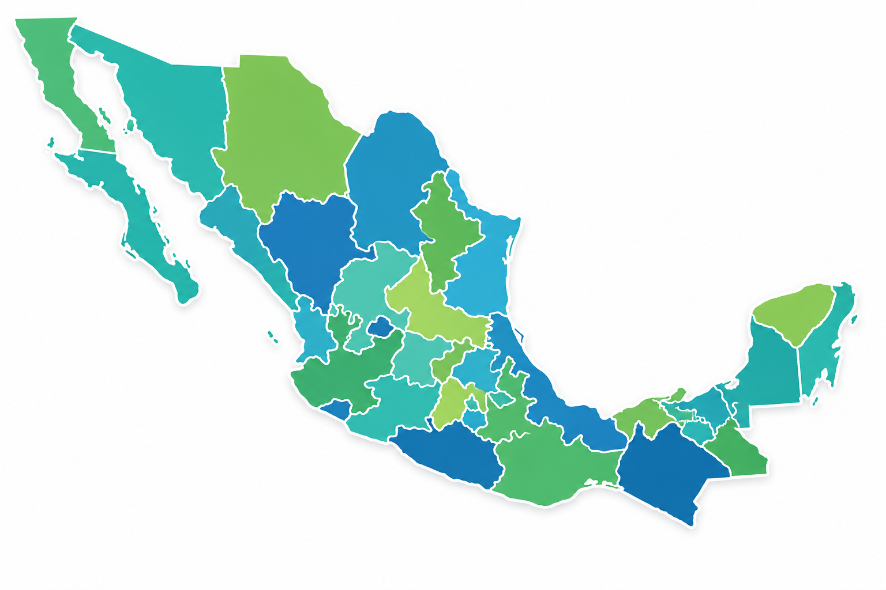

CONTROL Y PREVENCIÓN DE ADICCIONES
Orientación y apoyo para una vida saludable
Orientación y apoyo para una vida saludable
Si tú o alguien que conoces necesita apoyo, existen instituciones y líneas de ayuda especializadas que pueden orientar y brindar atención profesional.
800 911 2000
Atención gratuita las 24 horas del día, los 7 días de la semana.
Institución especializada en prevención, tratamiento, rehabilitación e investigación de las adicciones.
Dirección: Ciudad de México
Sitio Web: www.cij.gob.mx
Comisión Nacional de Salud Mental y Adicciones. Promueve programas de prevención y atención.
Dirección: Ciudad de México
Sitio Web: www.gob.mx/salud
Servicio nacional de orientación y apoyo psicológico para personas en situación de riesgo.
Teléfono: 800 911 2000
Horario: 24 horas
Existen centros de atención y orientación distribuidos en gran parte del territorio nacional.
